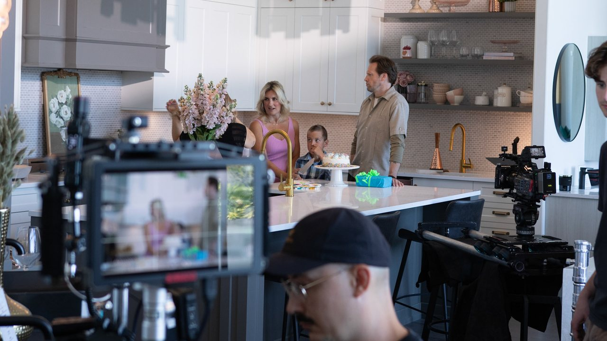

Harbour City Kitchens: Facility Tour
Website film: the warehouse, the factory, how a kitchen gets built · watch it on harbourcitykitchens.comMade for their website, for customers who wanted to see past the showroom: the warehouse, the factory floor and how a kitchen actually comes together. It was never meant to be a commercial, and that's exactly why it works. Three minutes that answer the questions people ask before they buy.